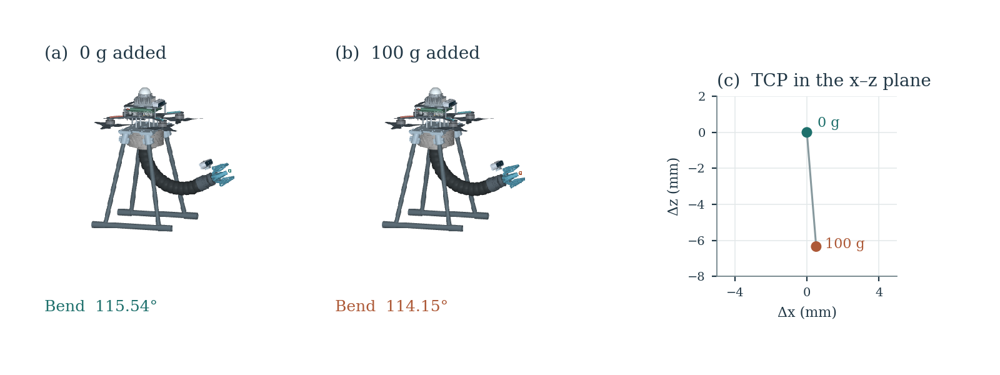
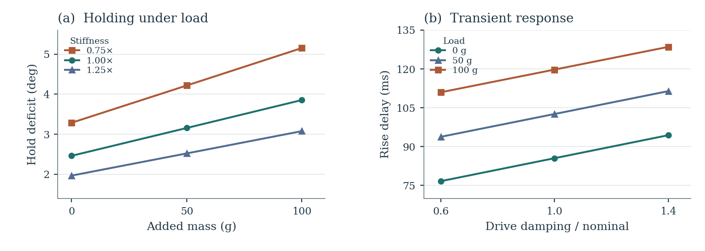

E2 · 等效驱动与末端载荷 / 2026-11-18 21:42（北京时间）
夹爪加 100 g 后，停在哪里，又晚到多久
固定机身运行 27 种参数组合和 3 项数值对照。标称驱动下，增加 100 g 使保持欠角增加 1.39°，夹爪平均下移 6.34 mm，上升到 59° 晚 34.25 ms。
模型与场景

01同一指令下的两个夹爪位置
8.80 s，原生模型使用实际积分关节状态。两个标记指向夹爪工具中心，等比例 x–z 局部图放大两次运行的位置差。

曲线与机制图

01保持欠角与上升响应
左图固定标称阻尼，比较三档刚度的载荷响应。右图固定标称刚度，比较三档附加载荷时阻尼变化对 59° 交叉时差的影响。

视频回放
010 g 与 100 g 同步积分回放
两边共用时间轴与相机，每帧各自读取仿真关节状态。下方给出相同指令、两个实际弯角及其三维 TCP 间距。
论文与报告
一页显示实际模型、毫米级局部放大、两个参数切片和三项配对效应，独立于论文正文。
数据及运行记录
27 项完整组合和 3 项网格/时间步对照、载荷惯量建模、保留的信号及判据。
每次的参数、保持欠角、上行及回程时差、峰值、扭矩、接触与越界计数。
每一对只改变一个因素，另外两个取值相同。包含保持段、瞬态与全程 TCP 变化。
两个边界工况比较 8 段和 24 段；低刚度、低阻尼、100 g 工况另外将时间步减半。
5 ms 时间轴，代表工况的命令、实际弯曲和夹爪位置，可用来重画曲线及复核某一时刻。
记录 E1 复跑偏差、数值对照、三个因素的配对影响及载荷与刚度的交互。
可核查附加质量、惯量、重力矩独立校验、原始峰值和饱和/接触事件。
积分时的研究分支提交、MuJoCo 版本和预登记文件摘要。
指定台架/感知目录的表头和已安装 SDK 文本清单。保留可用角度/应变线索，说明已知负载标注和柔性比映射的查证范围。
含图的讲述顺序、工况适用范围、可直接采集的台架对照和 NPZ 字段说明。
9 个工况，按运行编号/字段名可用 NumPy 直接读取。保留关节位置、速度、驱动、工具点和命令。
9 个工况，按运行编号/字段名可用 NumPy 直接读取。保留关节位置、速度、驱动、工具点和命令。
9 个工况，按运行编号/字段名可用 NumPy 直接读取。保留关节位置、速度、驱动、工具点和命令。
3 个工况，按运行编号/字段名可用 NumPy 直接读取。保留关节位置、速度、驱动、工具点和命令。